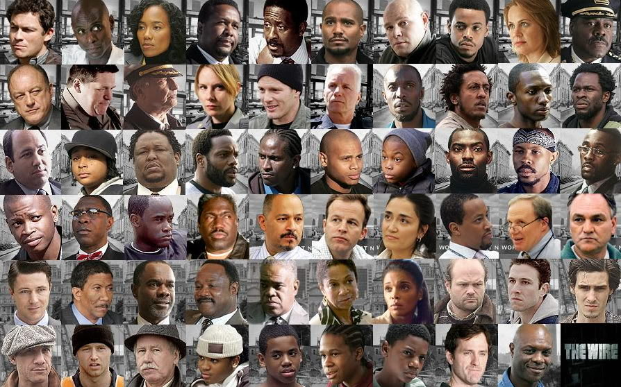

Cada temporada da série introduz uma nova perspectiva e sua relação com a policia, mas mantendo os personagens e avançando a história. As perspectivias em ordem cronológica são: A guerra com as drogas, o porto maritimo, o governo e a burocracia, escola e educação e por fim o jornalismo. Apesar de ser uma série policial, ela é muito realista e não contem tiroteios por episódio como outras, e sim mostram como as um policial, politico, juiz e até traficantes são comprometidos e afetados pelas instituições onde eles pertencem.
Os personagens da série são diversos e todos tem personalidade própria, sem cliches ou estereotipos. Ao contrário de muitas séries, não existe personagens vilões e heróis, mas sim pessoas sofrendo e lidando com as consequências das vidas que lhe foram impostas, sem contar que a série não tem medo de matar personagens "principais" pela realidade da história. Além disso, muitos dos atores e atrizes que fizeram a série continuaram suas carreiras e hoje estão em grandes produções, como Michael B. Jordan (Pantera Negra), Idris Elba (A torre negra), Aiden Gillen (Game of Thrones) entre vários outros exemplos.
Apesar de no seu tempo de exibição não ter recebido muitos premios ou ter uma audiência muito alta, não há uma lista de melhores séries de todos os tempos onde The Wire não esteja inclusa. A qualidade da história e do elenco é inegável. Atualmente é considerada uma das melhores séries de todos os tempos, ao lado de Breaking Bad, The Sopranos e algumas outras. Se você é daquelas pessoas que adora ver filmes clássicos, veja The Wire, pois é uma obra prima da televisão.